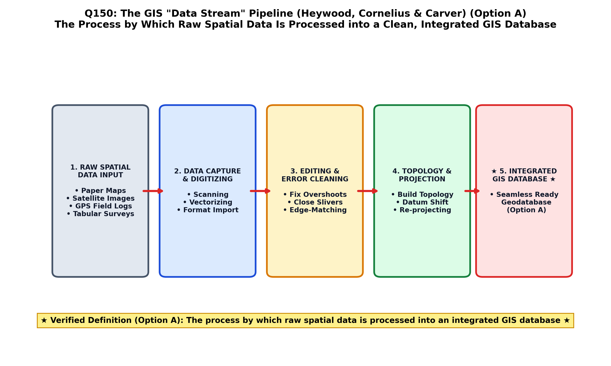

In spatial data engineering, enterprise geodatabase administration, and GIS implementation, raw field and sensory observations cannot be utilized for spatial analysis immediately upon collection. They must pass through an orderly, multi-stage processing pipeline.
By authoritative GIS definition (Star & Estes; Burrough & McDonnell; Bangar), the Data Stream is the sequential operational chain or process by which raw, disparate spatial data is captured, converted, verified, and processed into an integrated, topologically coherent GIS database (Option A):
| Data Stream Phase | Operational Inputs | Technical Processing & Transformation | Deliverable to Integrated Database |
|---|---|---|---|
| 1. Data Ingestion & Capture | Field GNSS logs, total station coordinates, satellite telemetry streams, paper geological maps, borehole lithologs. | Sensor deserialization, optical scanning, vector tablet / on-screen heads-up digitizing. | Raw coordinate strings and uncalibrated digital raster arrays. |
| 2. Geometric Preprocessing & Georeferencing | Unprojected pixel grids $(i, j)$ and raw arbitrary CAD drawings. | Ground Control Point (GCP) matching, affine coordinate transformation, datum conversion (Everest $\to$ WGS 84), map projection. | Planimetrically accurate, georeferenced spatial layers with metric coordinates. |
| 3. Topological Cleaning & Error Correction | Digitized vector lines with overshoots, undershoots, dangling nodes, and unclosed polygon boundaries. | Fuzzy node snapping, dangling node pruning, planar enforcement, duplicate vertex elimination. | Topologically valid point, arc, and polygon features satisfying topological integrity rules. |
| 4. Attribute Standardization & Verification | Field notebooks, laboratory geochemical assay spreadsheets, mineral lease records. | Data type validation, normalization, domain enforcement, Primary-Key linkage to spatial geometry. | Structured attribute tables seamlessly joined to spatial vector features. |
| 5. Enterprise Database Integration (The Goal) | Cleaned spatial geometries + validated attribute tables + metadata. | Spatial indexing (R-Tree/GiST), versioning setup, user access control, ISO 19115 metadata cataloguing. | Integrated GIS Database ready for multi-user spatial query, Map Algebra, and cartographic publishing. |

Data engineering studies consistently demonstrate that the data stream accounts for $60\%\text{ to } 80\%$ of the total time, labor, and budget of any major enterprise GIS implementation project (Burrough; Star & Estes). Without a rigorous data stream, analytical queries suffer from "Garbage In, Garbage Out" (GIGO).
In GIS data engineering and spatial system design (Star & Estes, 1990; Burrough & McDonnell; Bangar, p. 216), the data stream refers explicitly to the sequential end-to-end processing pipeline through which raw, heterogeneous spatial data (digitized coordinates, field notes, satellite feeds) is converted, structured, verified, and integrated into a standardized GIS spatial database.
Data flow between human users represents interpersonal communication, email sharing, or collaboration workflows, not the foundational GIS data stream processing architecture.
Transferring maps between platforms is Data Interoperability, spatial ETL (Extract-Transform-Load), or file format conversion (e.g. Shapefile to GeoPackage), not the data stream.
This describes user data entry or GUI user interaction, which is merely a tiny sub-step of data ingestion rather than the complete data processing stream.
| Data Pipeline Concept | Scope & Function | Key Standard / Protocol | Practical Objective |
|---|---|---|---|
| GIS Data Stream (Option A) | Sequential pipeline: Acquisition $\to$ Rectification $\to$ Topology $\to$ Integration | Enterprise GIS Data Ingestion SOPs | Transforms raw, unstructured field measurements into clean, integrated database layers |
| Spatial ETL (Extract-Transform-Load) | Automated data translation between disparate enterprise database formats | FME (Feature Manipulation Engine), GDAL/OGR | Migrates legacy CAD and CSV datasets into an enterprise geodatabase |
| Real-Time Data Streaming | Continuous ingestion of live telemetry data from active sensors | OGC Sensor Observation Service (SOS), MQTT, Kafka | Live monitoring of earthquake ground shaking, flood gauges, tracking mining vehicles |
| Data Harmonization | Standardizing heterogeneous schemas and naming conventions across agencies | INSPIRE Data Specifications, NSDI standards | Enables national seamless compilation of state geological maps |